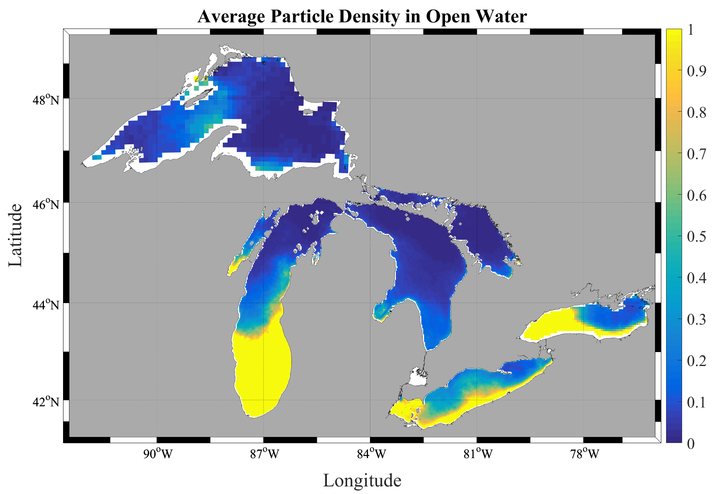

Research

Most of my group's work uses particle-transport models driven by operational ocean and lake currents to simulate where plastic goes once it enters the water. In the Laurentian Great Lakes we produced the first full-system estimates of plastic input and floating mass, and later the first mass estimates through the water column and on the lake bottom. We now extend these methods to the global ocean and to the processes — biofouling, settling, and beaching — that move plastic between compartments.
Key papers: Great Lakes inventory (2016) · 3D transport in Lake Erie (2020) · global coastal trapping (2021) · global marine reservoirs (2026)
Great Lakes Transport Simulations
Using currents from NOAA's operational forecast models, we simulate the input and transport of plastic pollution through the Great Lakes. Along with Ph.D. student Juliette Daily, we published the first full water-column and deposition mass estimates in the Great Lakes. We are currently modeling biofouling and beaching/deposition in collaboration with Christy Tyler, Nathan Eddingsaas, Andre Hudson, and Steven Day. Supported by NOAA/NY SeaGrant.
Simulated plastic particles entering and moving through Lake Erie (2009):
Notice how particles accumulate along the US shore driven by prevailing currents. Strong wind events disrupt gyre-based clustering, preventing the "garbage patches" seen in the open ocean.
Simulated plastic particles entering and moving through Lake Michigan (2009):
If using results from this study, please cite: M.J. Hoffman and E. Hittinger. 2016. Inventory and transport of plastic debris in the Laurentian Great Lakes. Marine Pollution Bulletin.
pELAstic Project
The pELAstic Project is a multi-institutional study of the fate, transport, and effects of microplastics in freshwater ecosystems, based at the IISD Experimental Lakes Area (ELA) in northwestern Ontario. Led by Chelsea Rochman, the project runs controlled in-lake mesocosm and whole-lake experiments. I am part of the core team of PIs, and my group leads the transport modeling that links where microplastics are added to where they end up in the water column, sediment, and food web.
Lake Ontario Microplastics Center (LOMP)
LOMP is a hub for research, translation, and engagement on how microplastics affect human health in the Great Lakes region — one of several centers funded by the National Science Foundation and the National Institute of Environmental Health Sciences. Jointly hosted by the University of Rochester and RIT, it studies how plastics circulate through Great Lakes ecosystems and reach people. I am a co-investigator, contributing the physical transport and exposure modeling.
I develop data-assimilation methods — techniques that optimally blend numerical models with real observations to estimate and forecast a system's state. Their power is in their generality: the same ensemble Kalman filtering framework carries across strikingly different systems, from lakes and estuaries to the Martian atmosphere and the electrical dynamics of the heart. The hydrodynamic estimates from this work also drive my group's plastic-transport modeling.
Great Lakes Circulation & Transport
High-resolution circulation modeling of the Great Lakes with FVCOM, combined with ensemble data assimilation, to improve estimates of currents, thermal structure, and transient features in Lake Erie and beyond. These circulation fields are what drive the plastic-transport simulations above.
Cardiac Electrical Dynamics
In collaboration with cardiac modelers, I apply the same data-assimilation ideas to the heart — reconstructing three-dimensional electrical wave dynamics, including the reentrant waves that underlie dangerous arrhythmias, from limited surface measurements. It is a striking case of methods built for weather and ocean forecasting transferring to an entirely different physical system.
Chesapeake Bay Forecasting
I built an ensemble Kalman filter data-assimilation system for the Chesapeake Bay operational forecast model, assimilating in situ and satellite observations — including sea-surface temperature and salinity — to improve estimates of the estuary's circulation and thermal structure.
Martian Atmosphere Reanalysis
With collaborators, I applied ensemble Kalman filtering to spacecraft observations of the Martian atmosphere to produce EMARS, a multi-year reanalysis of Mars weather, and to study the atmospheric instabilities that drive it — demonstrating that terrestrial data-assimilation methods extend to other planets.
With collaborators in RIT's imaging science community, I work on hyperspectral remote sensing — using the full spectral signature of every pixel to detect and track moving vehicles from the air, even through occlusion or among near-identical look-alikes. We have released open benchmark datasets, including AeroRIT, that are now widely used across the hyperspectral imaging community.
Key papers: AeroRIT dataset (2020) · hyperspectral vehicle tracking (2016)
AeroRIT
AeroRIT is a semantic segmentation dataset collected with a hyperspectral sensor over the Rochester Institute of Technology campus. The scene was captured from a Headwall Photonics Micro Hyperspec E-Series CMOS sensor at an altitude of approximately 5,000 feet (0.4m GSD). Semantic map pixels were labelled by Aneesh Rangnekar using individual hyperspectral signatures and geo-registered RGB images as references.

If using results from this study, please cite: Rangnekar, A., Mokashi, N., Ientilucci, E. J., Kanan, C., & Hoffman, M. J. (2020). AeroRIT: A New Scene for Hyperspectral Image Analysis. IEEE Transactions on Geoscience and Remote Sensing, 58(11), 8116–8124. doi:10.1109/TGRS.2020.2987199
Thanks to the Air Force Office of Scientific Research for supporting this work through the DDDAS program.
Semi-Supervised Hyperspectral Object Detection Challenge
Semi-supervised learning has developed into a highly researched problem as it minimizes labeling costs while achieving performance comparable to fully labeled datasets. As part of the Perception Beyond the Visible Spectrum workshop at CVPR 2022, we organized a semi-supervised learning challenge with 10% labeled data across three moving object categories: vehicles, bus, and bike.
The dataset (RooftopAI) is a hyperspectral vehicle detection dataset collected from the roof of the Chester F. Carlson building at RIT. The bounding boxes were labelled by Aneesh Rangnekar. A paper describing the sensor can be found here, and the challenge results paper here.
Thanks to the Air Force Office of Scientific Research for supporting this work through the DDDAS program.
Simulated Hyperspectral Aerial Video Dataset
DIRSIG simulated aerial video from a moving platform with moving vehicles. Hyperspectral frames can be downloaded along with ground truth files for the vehicles. More information on the dataset and our work with it can be found here.
If using this data, please cite: Uzkent, B., M.J. Hoffman, and A. Vodacek. 2016. Real-time Vehicle Tracking in Aerial Video using Hyperspectral Features. CVPR Workshop: Moving Cameras Meet Video Surveillance, June 2016.
Video of the scene:
Thanks to the Air Force Office of Scientific Research for supporting this work through the DDDAS program under grant FA9550-15-1-0093.